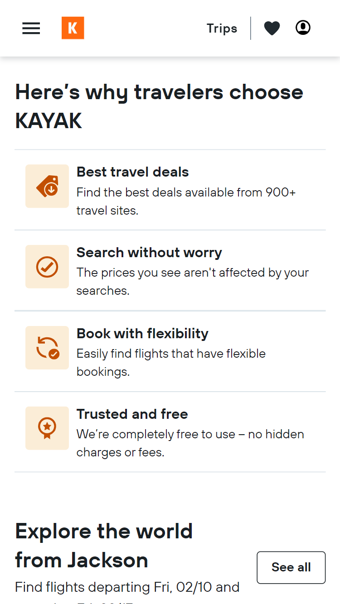
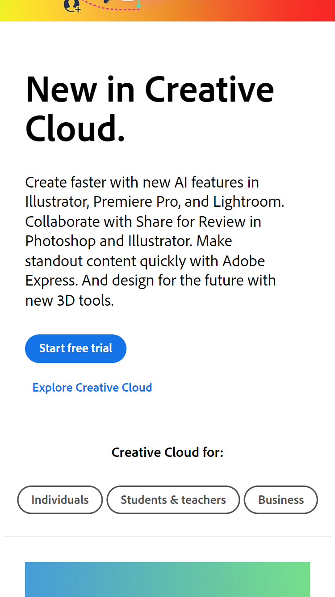
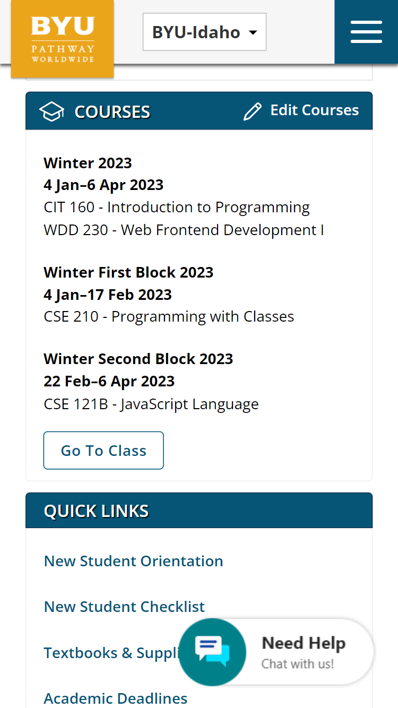

Proximity
Kayak
kayak.com This website demonstrates proximity by grouping objects that are related together while keeping others separate. The viewer is able to quickly scan the page and know what information is on the site.
White Space & Clean Design
Adobe
adobe.com This website demonstrates a clean design and great use of whitespace by balancing the elements and organizing the content. The viewer is able to easily navigate the page and find what they came to the site for.
Repetition
BYU-Idaho
degreeportal.org This website demonstrates repetition by using the same font, colors, headings, and layouts. It orients the viewer and emphasizes ideas and similar objects.